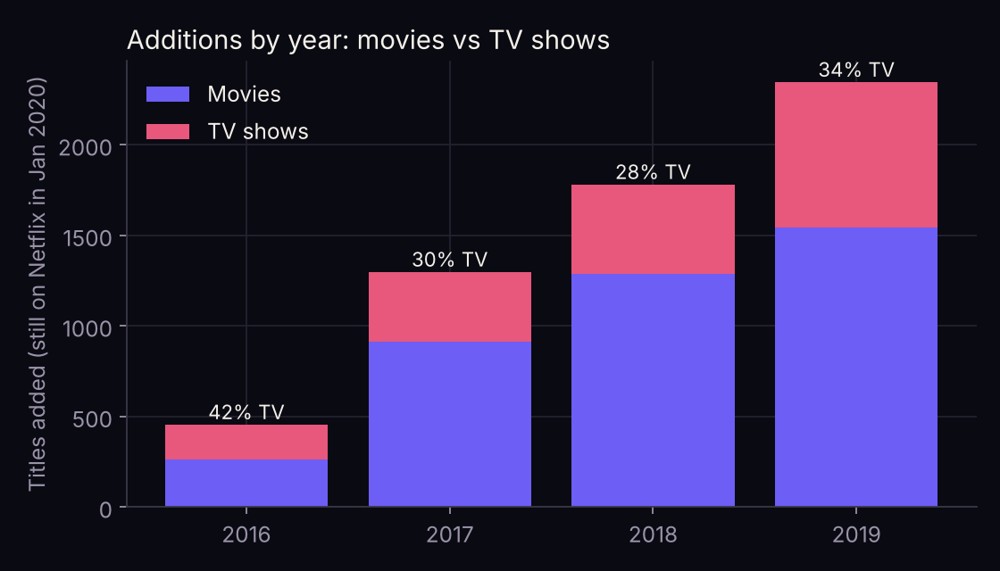
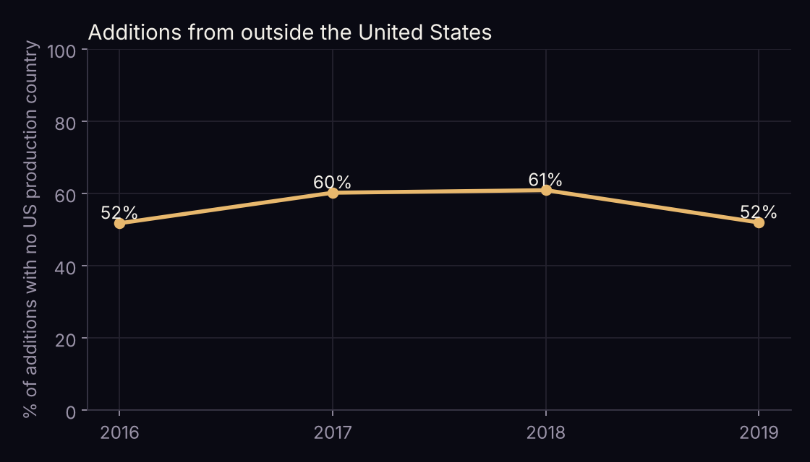
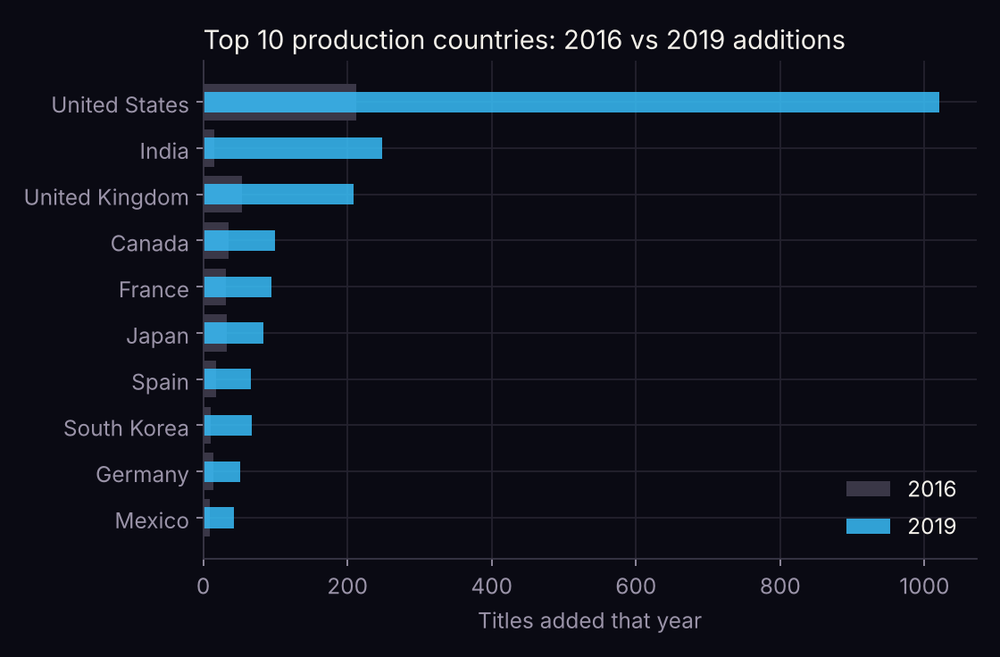
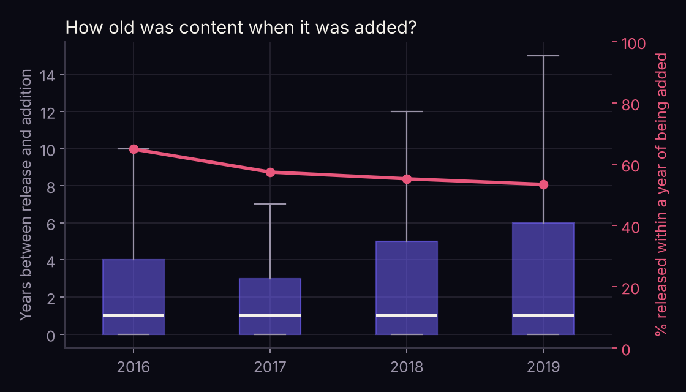

Netflix went global. Did its catalogue?
Between 2016 and 2019 Netflix added five times more titles a year. I tested whether that growth changed what it added, or just how much.
The data
The Kaggle dataset Netflix Movies and TV Shows by Shivam Bansal, January 2020 release: every title on Netflix at that moment, with the date it was added. After removing 11 undated titles and 3 duplicates, 5,884 were added in 2016–2019. I tested each idea with a chi-square or Kruskal–Wallis test across years and a logistic regression for the year-on-year trend.
1. More TV shows? No steady shift

TV made up 42% of 2016 additions, dipped to 28% in 2018 and recovered to 34%. Volume grew enormously for both, and films were still the majority of additions every year (58–72%).
2. More from outside the US? Rose, then fell back


The share of non-US additions climbed to 61% by 2018, largely on a wave of Indian titles, then returned to where it started. In absolute numbers non-US additions still grew almost five-fold: international content grew with everything else rather than replacing it.
3. Newer releases? The opposite

The typical addition was still about a year old, but later years brought in more back catalogue: after 2017 the spread of ages widened each year.
| Year added | Titles | TV share | Non-US share | Released within a year |
|---|---|---|---|---|
| 2016 | 456 | 42% | 52% | 65% |
| 2017 | 1,299 | 30% | 60% | 57% |
| 2018 | 1,782 | 28% | 61% | 55% |
| 2019 | 2,347 | 34% | 52% | 53% |
What it means
The "going global" story suggests a catalogue that swapped American films for international series. In this data, the growth was broad instead: more of everything, in roughly the same proportions, with more older titles mixed in.
Limitations
- Survivorship. Only titles still on Netflix in January 2020 are included. Titles added earlier and later removed are missing, and licensed content is removed more often than originals. This under-counts early years and may make early additions look newer than they were.
- Production country is not audience. It says where a title was made, not who it was made for.
- One snapshot. Later Kaggle releases cover 2020–21 and could test whether these patterns held.